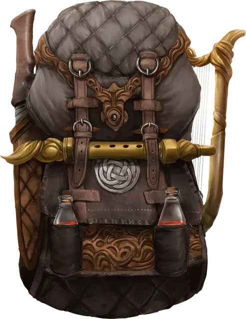

Удобный рюкзак Хеварда
Heward’s Handy Haversack
Чудесный предмет, редкий

Рекомендованная стоимость 501-5 000 зм
У этого рюкзака есть центральный карман и два боковых кармана, и все они являются межпространственными местами. В каждом боковом кармане помещается по 20 фунтов материи, не превышающей в объёме 2 кубических фута. В центральном кармане помещается до 8 кубических футов материи, весящей не больше 80 фунтов. Этот рюкзак всегда весит 5 фунтов, что бы в нём ни хранилось.
Помещение предмета в рюкзак использует обычные правила взаимодействия с предметами. Достаются предметы из рюкзака действием. Если вы достаёте из рюкзака конкретную вещь, она магическим образом всегда оказывается на самом верху.
У рюкзака есть несколько ограничений. Если он будет переполнен или если острый предмет проткнёт или разорвёт его, рюкзак разрывается и уничтожается. Если рюкзак уничтожается, всё его содержимое навсегда теряется, но артефакты появляются в новых местах. Если рюкзак вывернуть наизнанку, его содержимое выпадет наружу, но рюкзак придётся вывернуть обратно, чтобы его снова можно было использовать. Если в рюкзак поместить дышащее существо, оно может выжить 10 минут, после чего начнёт задыхаться.
Помещение рюкзака в межпространство, созданное сумкой хранения, переносной дырой или подобным предметом, мгновенно уничтожает оба предмета и открывает врата в Астральный План. Врата появляются в месте, где один предмет пытались поместить в другой. Все существа в пределах 10 футов от врат затягиваются внутрь и помещаются в случайным образом определённое место на Астральном Плане. После этого врата закрываются. Врата односторонние, и повторно не открываются.